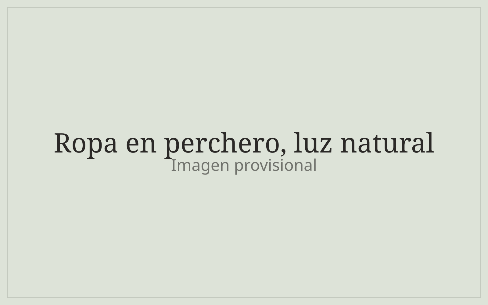
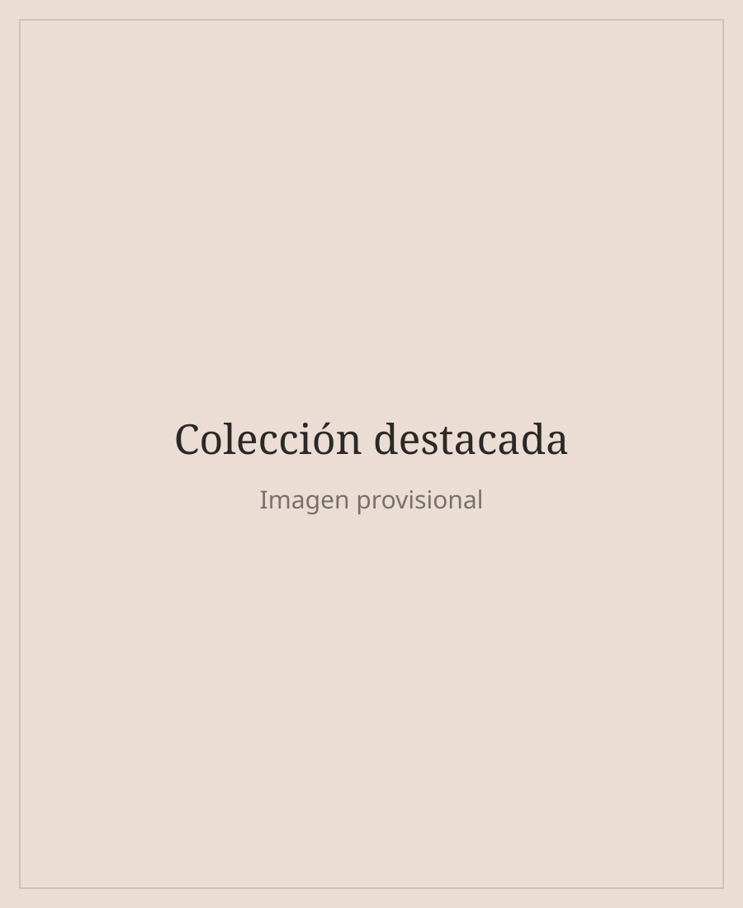

Tienda de barrio desde 2014
Ropa de fibras naturales, elegida con calma
Lino, algodón y lana con buen corte. Colecciones pequeñas para que te pongas lo que te gusta durante mucho tiempo.
Ver tienda
Colección destacada
Lino para cada día
Una camiseta básica y una camisa de manga larga, las dos de lino, en blanco, arena y azul. Prendas sencillas que combinan entre sí y con lo que ya tienes en el armario.
Si no sabes qué talla elegir, escríbenos y te ayudamos.
Ver prendas de lino
Por qué Lino y Alba
Una tienda de barrio, también online
-
Fibras naturales
Lino, algodón y lana, con un corte cuidado.
-
Colecciones pequeñas
Pocas prendas, bien elegidas. Nada de ropa de usar y tirar.
-
Te ayudamos a elegir
Te aconsejamos sobre la talla y sobre cómo combinar cada prenda.
-
Cambios fáciles
Tienes 14 días para cambiar o devolver tu compra.